Purchase plants from a reputable and reliable shops , and check out for yellow leaves, brown spots or stems.
Determine the amount of natural light your space receives, and to choose your plant accordingly.
In order to maintain healthy plants it required to keep a check on climatic conditions like temperature, humidity etc;

Soils will either be pH neutral with a value of 7.0, anything below that is classed as acid and anything above, alkaline.

Choosing evergreen plants acts as a backbone to your garden.
| 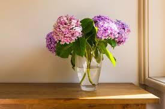 | 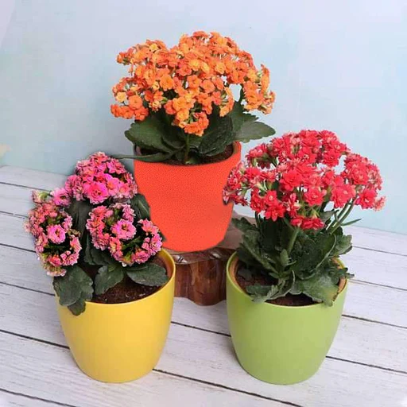 | 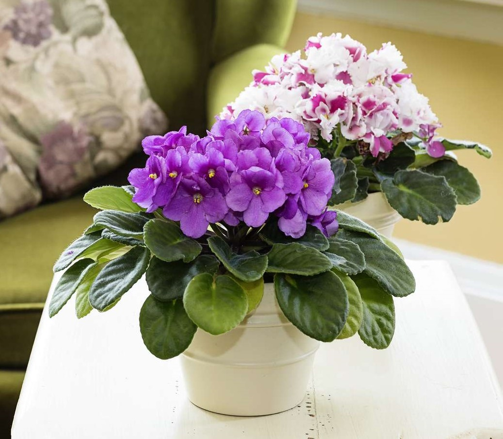 |
| 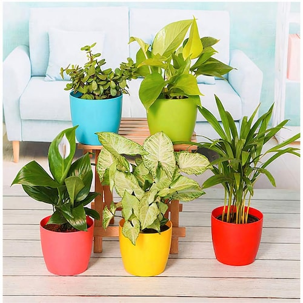 | 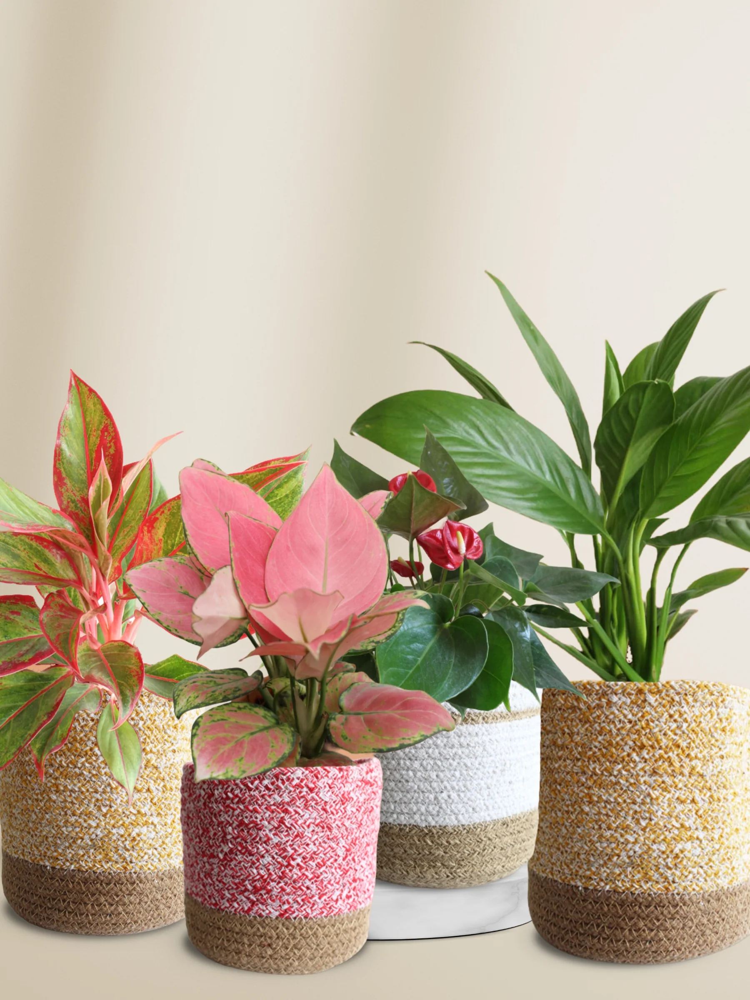 |  |
| 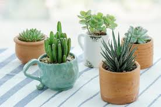 |  |
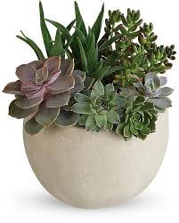 |
 |
 |
 |
| 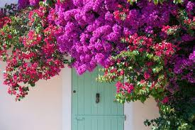 | 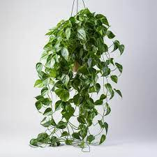 | 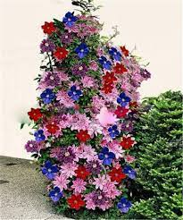 |
| 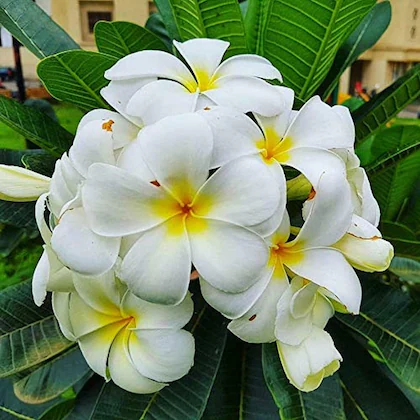 | 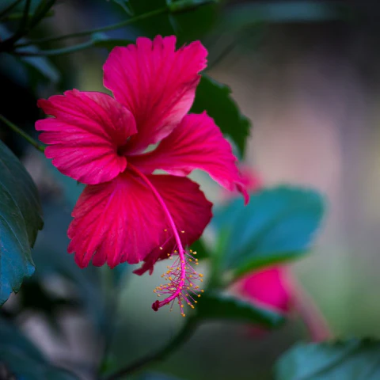 | 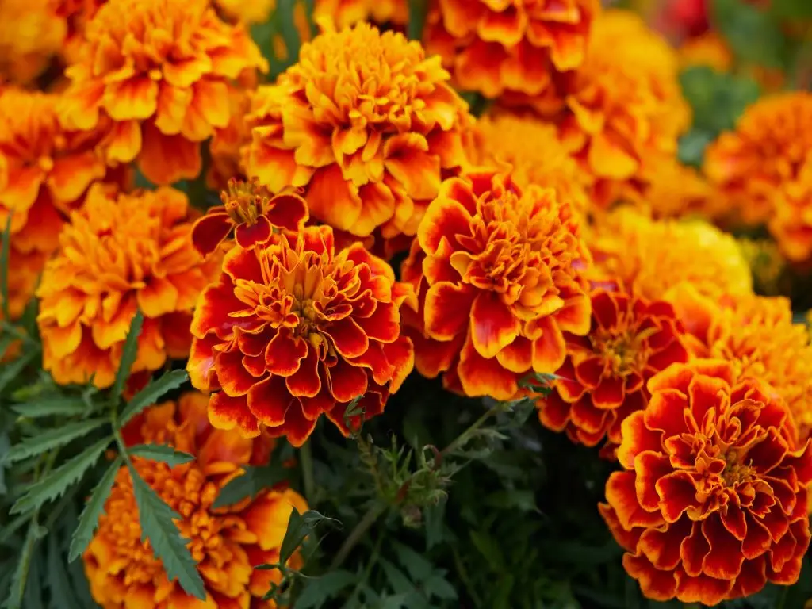 |
| 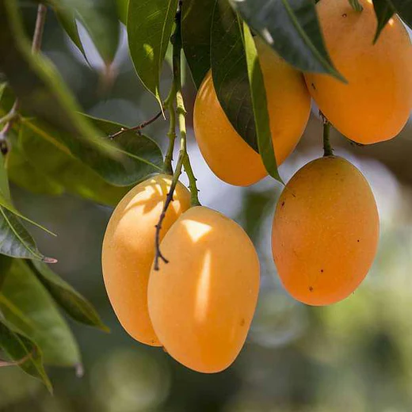 | 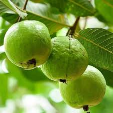 |  |
| 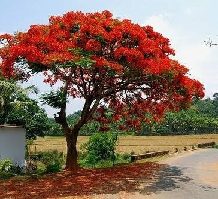 | 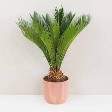 | 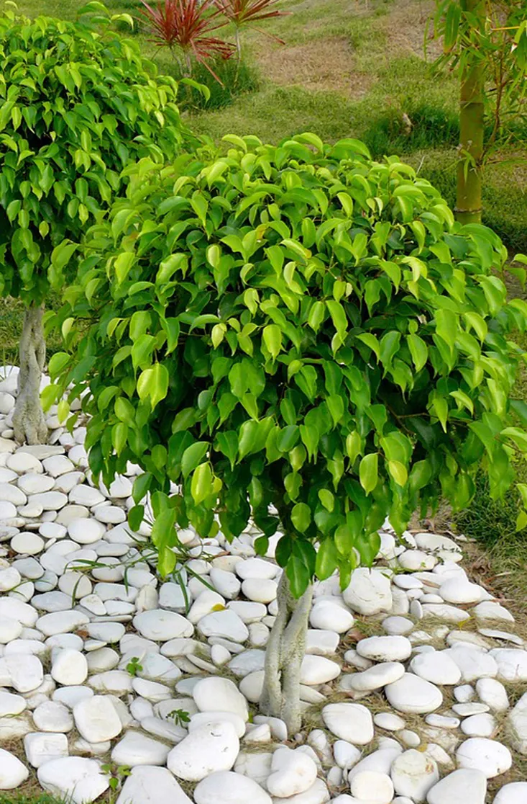 |
| 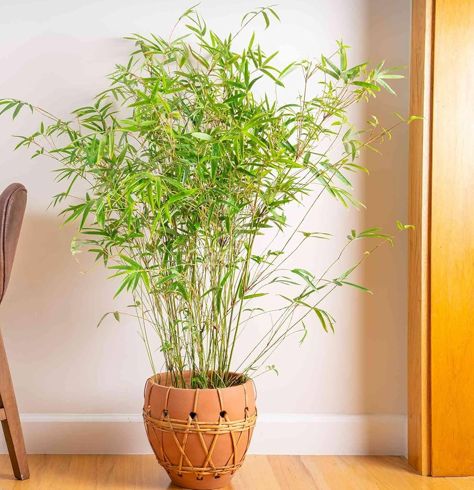 | 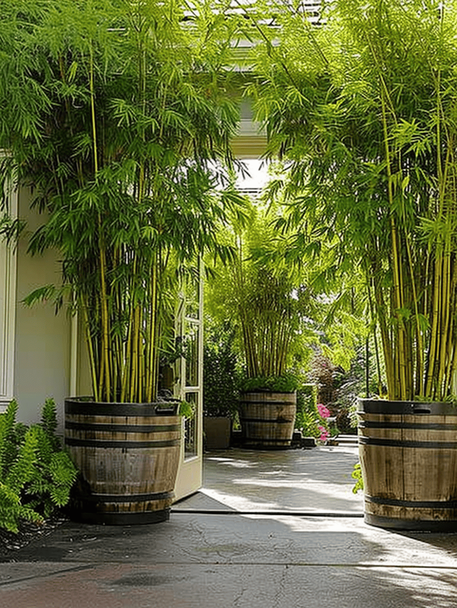 | 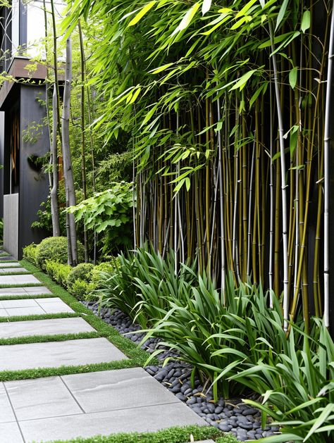 |
Raised garden beds are constructed as a frame or enclosure made of wood, stones, steel, landscape timbers, or other repurposed materials. Raised beds are becoming popular among gardeners because they offer many plant growth benefits.
Container gardening is growing plants in pots instead of the ground. It is an efficient method for small spaces and apartments that lack enough room to grow an actual garden.
Container gardening is growing plants in pots instead of the ground. It is an efficient method for small spaces and apartments that lack enough room to grow an actual garden.
| Name | Description |
|---|---|
| Cow-Dung Fertilizers | Cow Manure is the most commonly available organic fertilizer in India. |
| Bio-Compost | Compost manure is obtained from the process of home or farm level composting. It’s either done in composter or compost pit. |

| Name | Description |
|---|---|
| Mixed Fertilizers (N:P:K) | These are combinations of all 3 NPK. They help overall growth of leaves, roots, fruits, and flowers. |
| Micronutrients | These are given in lesser quantity to plants for enhanced growth. Micronutrients are provided in case if plants are showing deficiency of any particular micronutrient. |
Different types of plants will have different individual care needs, but what I wanted to cover is general care, and just little tips/tricks that I wish I knew earlier that would’ve made my life easier
When it comes to caring for plants I try to learn to a ‘less is more’ approach. Plants are self sufficient. They grow in nature on their own without any help. You just need to make sure they have the basic ingredients they need - and then let them take care of themselves.